a scene in yaml.
a finished frame out.
Build worlds, render films and compose their soundtracks on your laptop. Slayer brings procedural models, physically grounded light transport and music into one open-source system.
Describe a scene in plain text, explore it in Ferruccio, or work with a coding agent. Slayer renders on the CPU or on your Mac’s GPU through Metal. The scene stays yours to inspect, edit and build on.
source to frame
A job names a scene, a film and a moment. This job places the camera on Mauna Kea at dusk, using NOAA elevation data, with the two Keck domes above the clouds. The YAML below is the job used to render the image beside it.
$schema: https://github.com/janearc/slayer/schemas/job-v1.jsonscene: named: heard with: stage: kind: kecks eye: [100, 45, 210] end-eye: [90, 44, 200] look: [-30, 13, 0] wide: 68 exposure: 1.4 aim: [180, 180] elevation: [0, 0] sun: [2.5, 1.5] sky-hours: [0, 0.3] interior: false terrain: /Users/jane/mesh/the-vorrh/data/slayer/terrain/hawaii/noaa-crm/noaa-hawaii-crm2023-big-island-float.tif from: 61.81818181818181 until: 65.45454545454545 bpm: 66film: {width: 2048, height: 1152, rays: 4, wide: 68, exposure: 1.4}renderer: gpuat: {value: 64, unit: s}outputs: picture: /Users/jane/mesh/the-vorrh/renders/frames/2026-11-15-quell-f05-maunakea-cinder-2k/proof.png

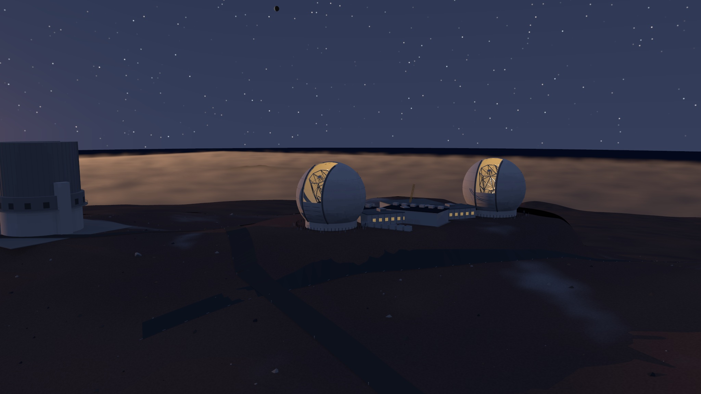
the contact sheet
Every frame on this page came out of slayer, and so did the music: the score for Into the Centre and Moth Light farther down, were composed by jane michelle arc and played by cheeptune, slayer's own synthesizer, from scores written as text. Play the clips to hear the scores and see the scenes in motion.
into the centre
fire
one retreat
lantern
zappy

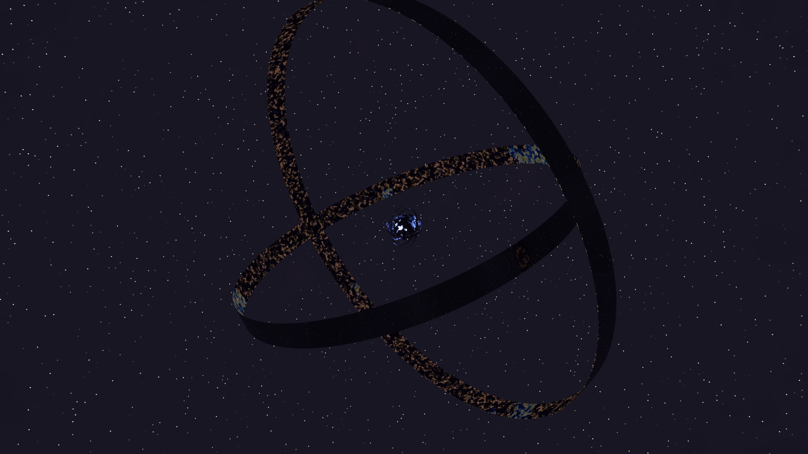
the orbital

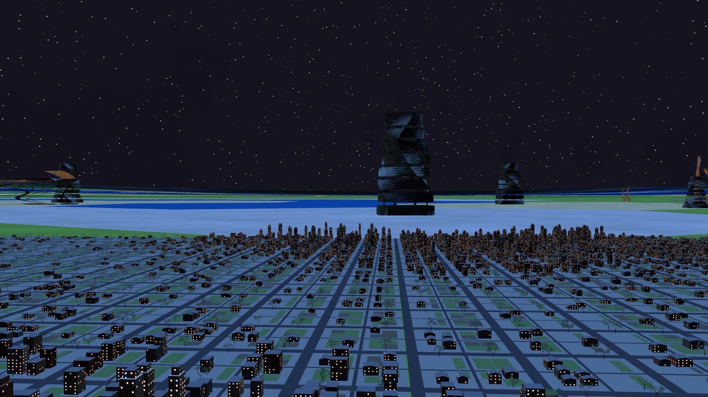
the orbital, at street level
the earth, turning

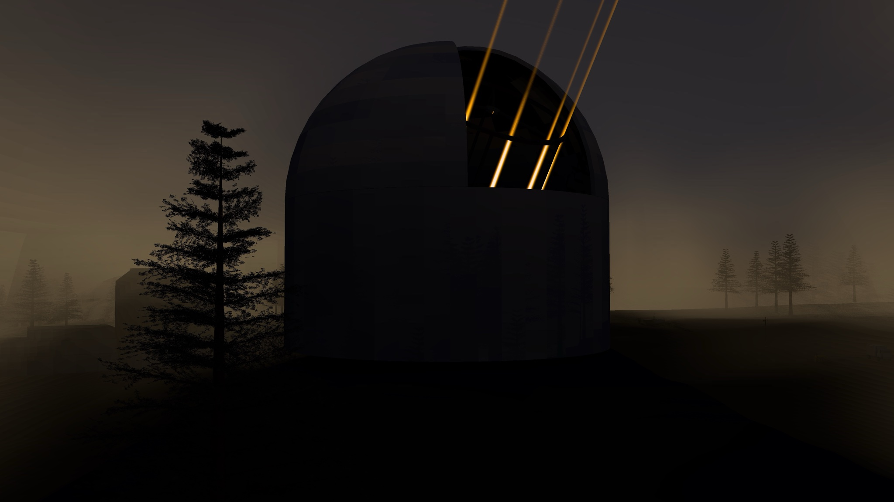
the beam

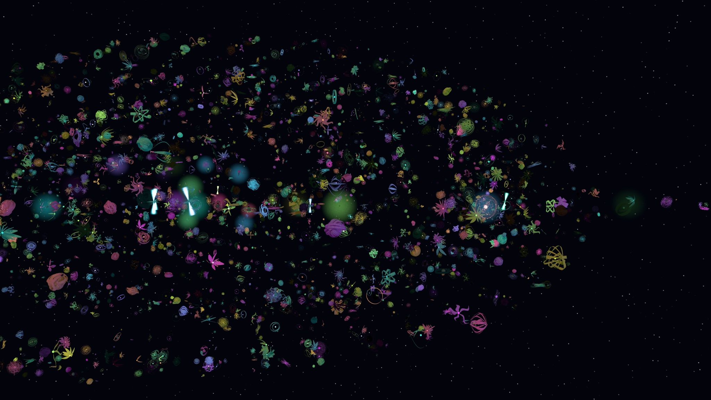
the multitude

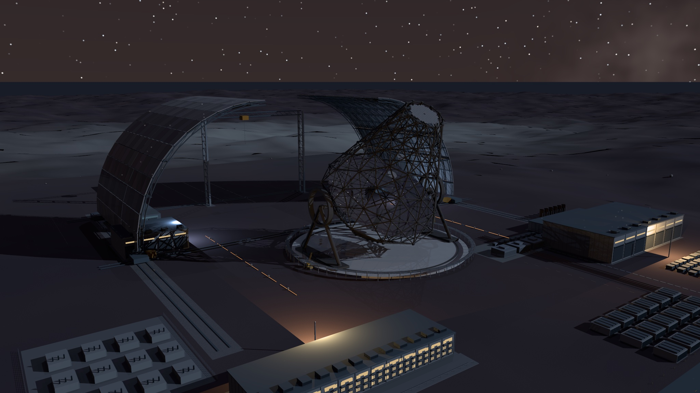
owl

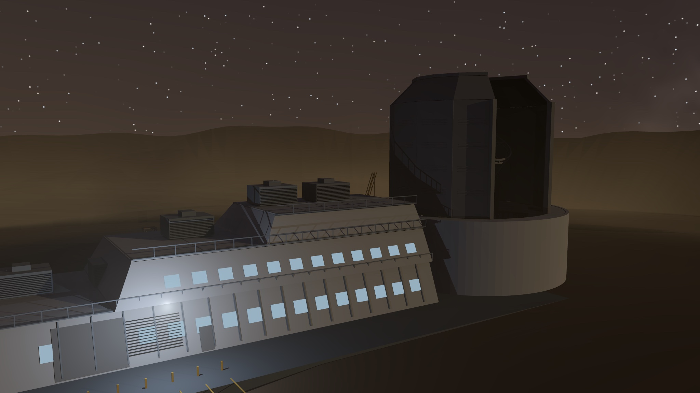
rubin

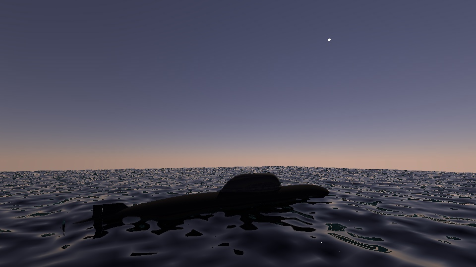
alfa, surfaced

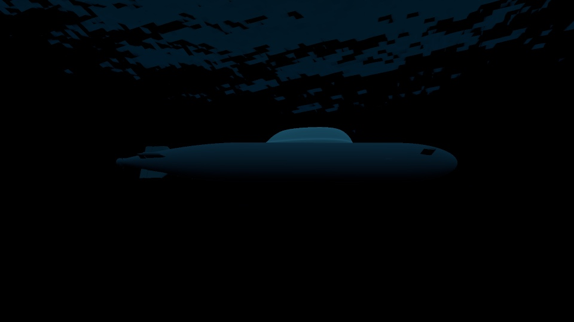
alfa, from below

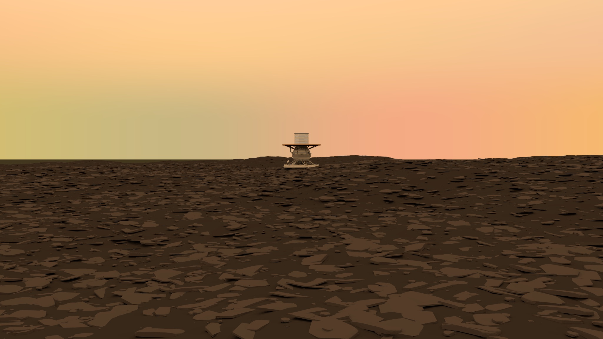
venera, on venus
in orbit

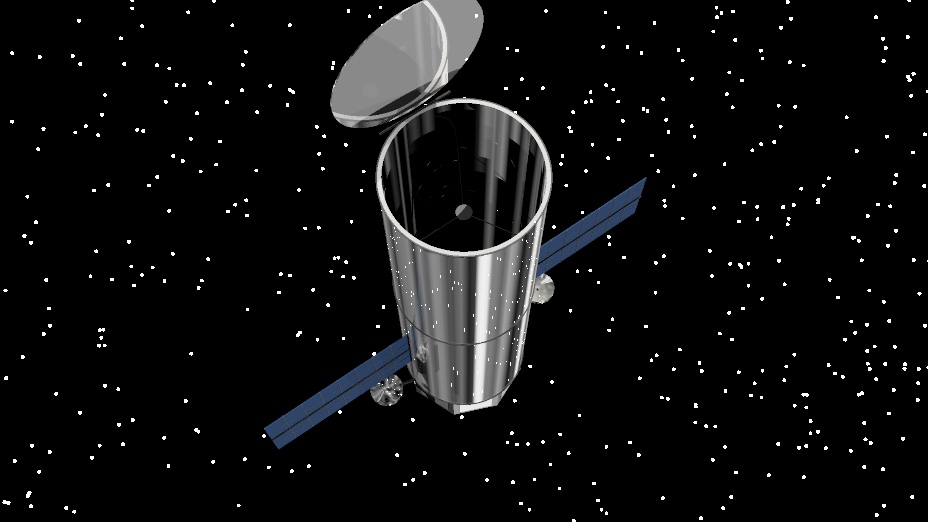

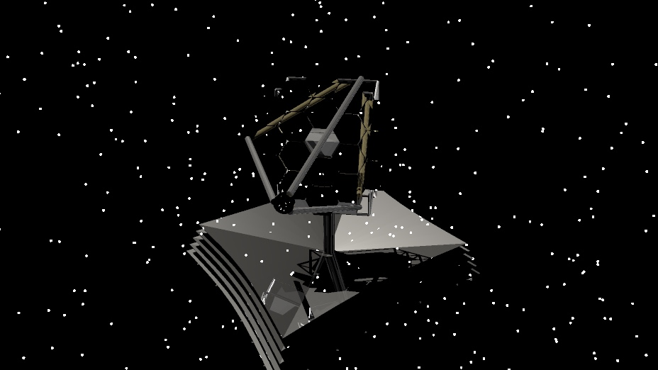

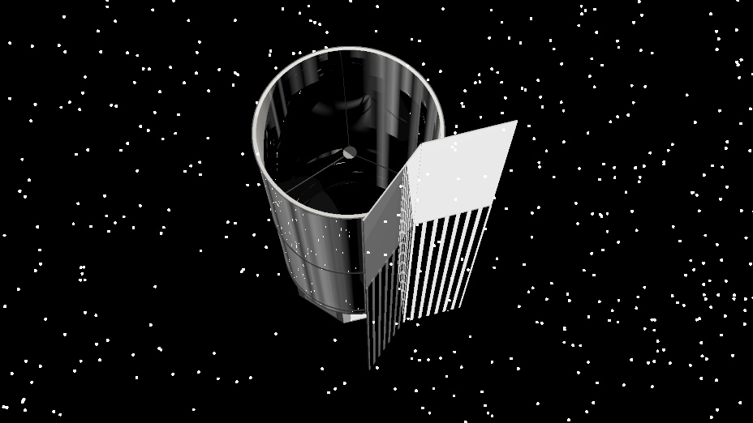
Each is the manufactory's own model at its highest detail, lit by one hard light, with real stars behind it from Gaia, and the catalogue lists the sources each was built from.
built for the agent loop
Plain text in, plain words back. An agent that can edit
a file and run a shell can direct a film, and
slayer --agent-help gives it the verb map, written for it.
Small models running locally, like Qwen3 14B, have learned to drive it
without much trouble.
-
it reads the catalogue
$ slayer list presetsScenes, film presets, stocks, scores and voicings, by name.
-
it checks its work
$ slayer assess job.yamlValidate the scene before spending time on a render.
-
it hands you the picture
$ slayer draw job.yamlRender frames, a film and its soundtrack from the same job.
Rendering runs locally. Your laptop is the studio.
built like a photographer, checked like a physicist
- ninjafilm
- Photographic stock, optics and grain. Its darkroom re-exposes a saved frame without tracing it again. Render in landscape or portrait, then choose output settings for your destination, including YouTube. Configurable quality options let you balance detail, render time and file size.
- manufactory
- Spruces, stones and ferns grown from a seed. The same seed makes the same thing, bit for bit. The catalogue draws 121 of the kinds it makes, with the sources each was built from.
- cheeptune
- A score rendered ahead of time and timed to the picture. Slayer ships with 37 original tracks, Apache licensed like the rest of it.
- sky
- Volumetric light and the cosmos, to scale.
- burning-trousers
- An independent test harness. Its expected results come from physics, published data or its own arithmetic, never from the renderer under test.
- grissom
- The survey viewer: sky surveys laid onto the sky's triangles, the earth beside them, and the sky as seen from any place on it. It draws on Metal directly, without the ray tracer, so it moves as fast as you do.
- ferruccio
- A native workspace for building scenes. Drag objects in the working view, orbit the camera or move through the scene with two trackballs, then render the finished image with Slayer. Ferruccio uses wgpu on Metal; working-view performance depends on the scene. Its colors come from Chroma, just like this page. How it works, and why.
- azazel
- Slayer's own job queue. Agents submit slayer commands to one durable queue, and a single worker admits them, watches them and keeps what came of them. Few ray tracers ship with one. It is still being validated.
- game
- What builds, checks and releases slayer: tests, mutation tests, lint, and lanes that take turns on one machine, so heavy work waits instead of colliding.